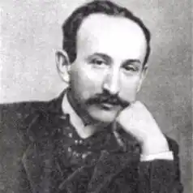
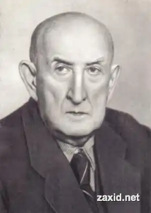

Твори Михайла Яцківа упродовж кількох десятиріч цього століття були в центрі літературного життя, навколо них спалахувала полеміка, яка вихлюпувалася за межі української преси, його новели широко перекладалися російською, польською, чеською, німецькою, французькою і навіть японькою мовами, входили до антологій новелістики світу.
Народився Михайло Юрійович Яцків 5 жовтня 1873 р. в с. Лесівці біля Станіслава (нині Івано-Франківськ) у селянській родині. Здобувши початкові знання в сусідньому містечку Лисці, М. Яцків переходить до однієї із шкіл Станіслава, а 1886 р. стає гімназистом.
У гімназії він одразу примкнув до таємного гуртка, який очолював його ровесник, згодом український письменник Денис Лукіянович. На зібраннях гуртка читалися й обговорювалися книжки революційного змісту. Гімназійне начальство вчинило розправу над організаторами гуртка. Відтоді майбутній письменник пройшов суворі "університети" життя: був актором мандрівного провінційного театру, якийсь час провів навіть у монастирі, що, зрештою, дало йому багатий матеріал для майбутніх художніх творів. 1897 р. прибуває до Львова й стає службовцем страхово-кредитного товариства "Дністер". У цей час розпочинається і його письменницький шлях. 1899 р. в "Літературно-науковому віснику" з'являються шість оповідань молодого автора, наступного року виходить збірка "В царстві сатани", 1902 — повість "Огні горять", ще через три роки — збірка новел "Душі кланяються" (1905). Молодого письменника з прихильністю привітав Іван Франко, його перші твори високо оцінили Леся Українка та Василь Стефаник. У перших книжках письменника вражають сувора правда життя, заглиблення в соціальні процеси, своєрідний художній розріз дійсності. Автор прагне розкрити різні суспільні шари: військо, церква, богемні кола — скрізь панують фальш, підступність, фарисейство, на кожному кроці трагедія нещасних і покривджених. Драматизм зображення часто посилюється тим, що дійсність брутально топче сподівання і мрії персонажів. Вогник надії блимає попереду, здається, мрія ось-ось здійсниться, але в останню мить вона зникає. Ця дивна фата моргана супроводжуватиме не одного героя творів М. Яцківа. Вона наче символізує марність зусиль знайти своє щастя в умовах, які тоді існували. Селянин у Яцківа, як і В. Стефаника, Марка Черемшини, Л. Мартовича, С. Коваліва, — це вже не ті горді і романтизовані герої, зображені Ю. Федьковичем, певні себе, охочі похизуватися силою і молодецьким буйством десь на святі, а прибиті, нужденні бідаки, залякані й затуркані, у яких десь глибоко всередині киплять затамовані гнів та ненависть. При цьому варто підкреслити, що героями новел М. Яцківа виступають не тільки нещасні, пересічні люди, а й натури обдаровані, неординарні, тому крах їхніх сподівань сприймається не як невдача чи випадковість, а як невідворотна життєва драма. Чи не найтрагічніші картини постають перед читачем у творах М. Яцківа з військового побуту, в яких письменник, на думку О. Білецького, розкрив "справжні жахи австро-німецької казарми". Армія відривала сільських парубків від їх звичного життя і кидала у прірву муштри та глузувань з боку військової старшини, приниження людської і національної гідності, розкладала солдатську масу духовно. Зображує молодий письменник і механізм системи освіти (повість "Огні горять"). Хлопець Остап із селянської родини їде навчатися до гімназії в провінційне містечко. Там він стикається з явищами, які глибоко ранять його вразливу натуру. Сюжетну основу повісті становлять взаємини Остапа з Ніною Куликовою, а тлом виступає гімназійне середовище, а також будні провінційного театру, загалом — задушлива атмосфера містечкового життя. Повість викликала широкий резонанс серед громадськості, особливо молоді. Вона ставила болючі, нагальні питання, і хай як художня цілість не в усьому вдалася авторові, цілий ряд епізодів у ній вражає своїм реалізмом. У творчості М. Яцківа відбито процес загального оновлення української прози кінця XIX — початку XX ст. Поява нових тем, нових героїв, нових конфліктів, вплив загальноєвропейського літературного життя — все це позначилося на творчих пошуках письменника, спричинилося до появи в його стилі нових рис. Однією з характерних ознак реалізму новелістики М. Яцківа є глибокий психологізм. Проникнення в людську душу, крізь призму якої розкривається суспільне середовище, пов'язане у письменника з посиленням ліричного начала та інтенсивними пошуками нових засобів художньої мови: концентрацією образності, мелодійністю фрази, пластичністю малюнка, трансформацією фольклорної символіки тощо ("За горою", "Благословення", "Серп", "Поема долин" та ін.). Позначився на творчості М. Яцківа і вплив естетики модернізму. Проникнення нових літературно-мистецьких течій у галицьке художнє середовище спричинилося до появи літературної групи "Молода муза". Щодо назви гуртка, то пішла вона, ймовірно, від новели М. Яцківа "Доля молоденької музи", хоча приписують її авторство часом то О. Луцькому, то Б. Лепкому. У творах М. Яцківа помітне прагнення поєднати натуралізм і символізм, ліризм і сарказм, що в одному випадку призводило до цікавого сплаву, а в інших — до еклектики. Художні пошуки письменника, його манера, незвична для сприйняття читачем, вихованим на традиціях української соціально-побутової прози й часто незрозуміла йому, викликали неоднозначні оцінки тогочасної критики. Зокрема, захоплено відгукнулися М. Євшан, М. Сріблянський, М. Данько, різко негативно — І. Труш, Д. Лукіянович, С. Єфремов та ін. М. Яцків, надзвичайно чутливий до нових віянь у західноєвропейських літературах, наполегливо шукав — з більшим чи меншим успіхом — способів оновлення художньої мови. Низка його творів пройнята настроями скороминущості життя, страхом перед смертю. На думку Б. Рубчака, талант М. Яцківа "поєднав у собі брутальний натуралізм, впливи Пшибишевського, густосимволістичний стиль і загадкову, подекуди майже сюрреалістичну ліричність" (Розсипані перли. К., 1991). Читаючи новели М. Яцківа, не раз натрапляєш на явний або опосередкований перегук з творами Ш. Бодлера (його твори український письменник високо цінував, а деякі поезії в прозі перекладав рідною мовою), Е. По, М. Метерлінка, Л. Андреєва, С. Пшибишевського... З Бодлером споріднюють Яцківа мотив фатуму, "перегук сердець у лабіринті людської долі" ("Архітвір"); новела "Білі вівці" перекликається з драмою Метерлінка "Сліпці". В Е. По М. Яцків перейняв майстерність будувати фантастичний сюжет, де людина, поставлена в ситуацію крайньої небезпеки, долає страх і знаходить вихід ("Мальований стрілець"). Особливо багата символіка письменника. Наскрізний символ у М. Яцківа може лягти в основу цілого сюжету. Взяти хоча б "Поему долин" чи "Лісовий дзвін" з феєрверком натяків, алегорій, гри уяви. В них чути відгомін народної демонології, чарів купальської ночі, шукання цвіту папороті й власної долі, що надибуємо в народних легендах та переказах. Герої його творів замислюються над проблемами буття. Ця задума часто постає на філософсько-естетичному ґрунті, в дусі фольклорної символіки ("Поема долин", "Лісовий дзвін", "Де правда?"). У своїх новелах М. Яцків часто вдається до засобів суміжних мистецтв, особливо музики та живопису. Це було характерним для тогочасної української літератури, зокрема прози. І. Франко у статті "З останніх десятиліть XIX в." (1901) писав, що молода українська проза "під пером Кобилянської, Стефаника, Черемшини, Яцківа набрала поетичного лету, мелодійності, ніжності, грації та різнорідності...". Живописно-музична стихія проявляється у творах письменника по-різному: то світ подається через сприйняття вразливого митця, то автор запозичує в живопису принцип композиційної структури, зокрема при створенні группового портрета, та, нарешті, вдається до тропів, особливо в пейзажних картинах, щедро послуговуючись музичними та живописними асоціаціями. Музичні й живописні враження стають джерелом метафорики М. Яцківа — багатої і розмаїтої, в якій помітна виразна тенденція до схоплення різнопланових зв’язків між предметами і явищами. Поетика письменника має пряме відношення до загальної концепції твору. У 1914 р. немолодому вже письменникові довелося одягнути мундир солдата австрійської армії і піти воювати. І хоча він незабаром потрапив у російський полон і повернувся додому, та ж повною мірою зазнав злигоднів і жахів фронтового життя. Яскравим художнім документом воєнних буднів є оповідання та новели, що увійшли до збірки "Далекі шляхи" (Львів, 1917) та повість "Горлиця", що з'явилася у журналі "Шляхи" (1915-1916). Воєнна тематика лежить в основі більшості оповідань збірки. Автор бере ситуації наче й звичайні, але такі, що дають йому можливість за окремим фактом побачити широку картину, підкреслити певну ідею. У повісті "Горлиця" війна постає як страшна реальність, а ще в образі символічного ока горлиці — таємниці, якої герой твору ніяк не міг розгадати. На цей час припадає і публікація повісті "Танець тіней", яку автор після переробки уже в радянський час назвав "В лабетах". Повість постала як наслідок багаторічних спостережень над життям банківського товариства, в якому письменник тривалий час працював рахівником. М. Яцків, за власним визнанням, спирався на засади французького романіста Е. Золя, зокрема, взяв для себе за зразок його відомий роман "Жерміналь". Повість "Танець тіней" мала широкий громадський резонанс. Великою статтею на неї відгукнувся М. Грушевський, який назвав цей твір дуже цікавим людським документом, у якому крізь призму фінансової інституції, боротьби службовців проти експлуатації відбилося "не тільки львівське чи галицьке, а й взагалі українське життя" і де "автор узявся за перо, щоб представити у відповіднім світлі всю цю історію, і, читаючи, відчувається, що се не тільки історія, але й апеляція до найвшцбго трибуналу — громадської опінії". Після книжок "Далекі шляхи" і "Танець тіней" у творчості письменника настала довга перерва. М. Яцків зробив політичну помилку — 1920 р. він став редактором газети "Рідний край", яка визнавала окупацію панською Польщею Галичини, закликав до співробітництва з окупантами. Митець тяжко спокутував свою провину перед народом. Він був приречений на творчу мовчанку: українська преса в Галичині бойкотувала його. Дуже швидко довелося поховати "фантастичну мрію" про спільну творчу працю обох народів в умовах окупаційного режиму. У повоєнні роки М. Яцків працював у Львівській науковій бібліотеці (тепер Львівська наукова бібліотека ім. В. Стефаника НАН України). Написав кілька оповідань, видав кілька збірок творів. Помер письменник 9 грудня 1961 р. Написані в ці роки оповідання нічим уже не нагадували витончені психологічні новели, якими письменник так тріумфально входив в українську літературу. Вони схематичні, з наперед заданою розв'язкою, як, зрештою, твори більшості прозаїків радянського часу.